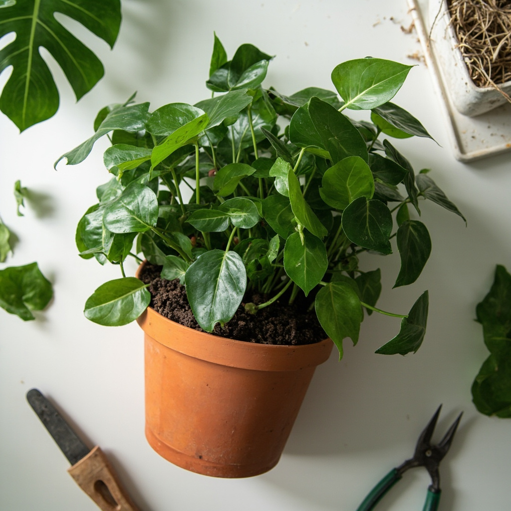
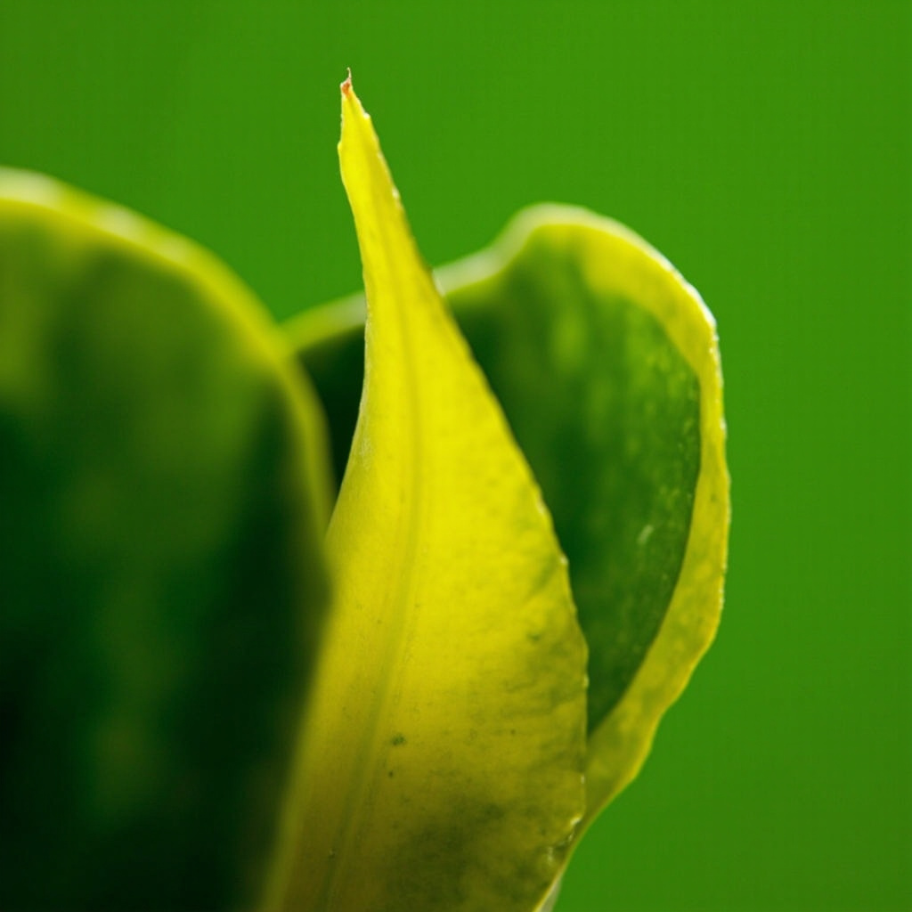
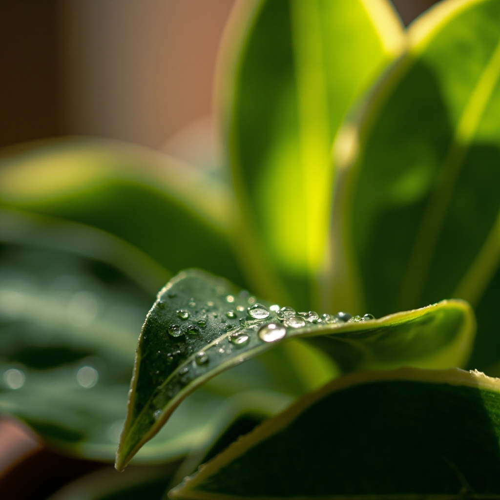

Home Gardening Made Simple
All-in-one plant database with care guides and growing tips - so you spend less time researching and more time enjoying your plants.
All-in-one plant database with care guides and growing tips - so you spend less time researching and more time enjoying your plants.
Tap any plant below to discover care tips, growing guides & more ✨
Practical advice to keep your plants thriving

June 5, 2026
Your Monstera outgrowing its pot? Learn how to repot it correctly with this simple step-by-step guide.

June 6, 2026
Pothos is one of the easiest plants to propagate. Learn how to grow new plants from cuttings for free.

June 6, 2026
Yellow leaves, brown tips, pests - every plant parent faces these issues. Learn what's causing them and how to fix each one.

June 6, 2026
NASA studies show certain plants remove toxins from indoor air. These are the best air-purifying houseplants.

June 6, 2026
Yellow leaves are the most common plant problem. Learn 8 causes and exactly how to fix each one.

June 1, 2026
Wilting leaves? Dry soil? Drooping stems? Learn the 5 clear signs that your houseplant is thirsty.
Explore 50 plants with detailed care guides. Search by name or filter to find what you need.
Heart any plant to save it to your favourites. Build your personal plant collection.
Get clear tips on watering, light, humidity, and more - all in one place.
Less time researching, more time enjoying. Your plants will thank you.
Register for new features and get tips to help your plants thrive.
Thanks! You're on the list 🌱
No spam. Unsubscribe anytime.
Follow @plantglow for daily plant tips, care hacks, and greenery inspiration.
Have a tip, trick, or story to share? We'd love to hear from fellow plant parents — email us anytime!
Share Your Experience